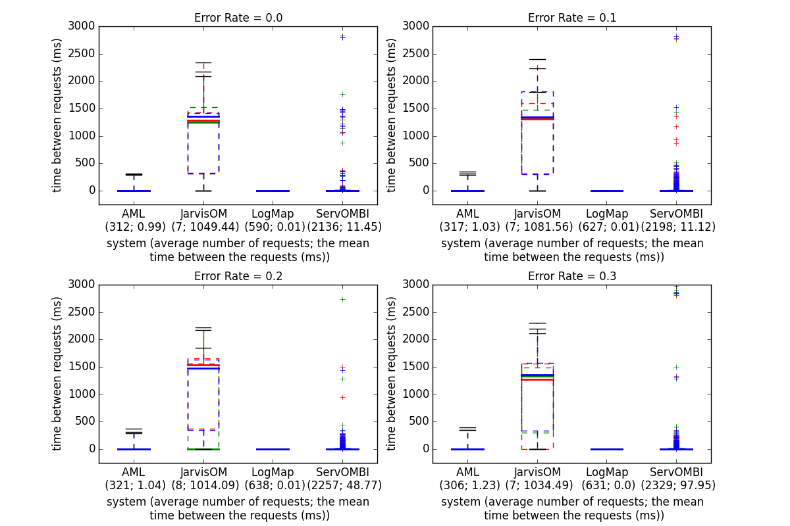
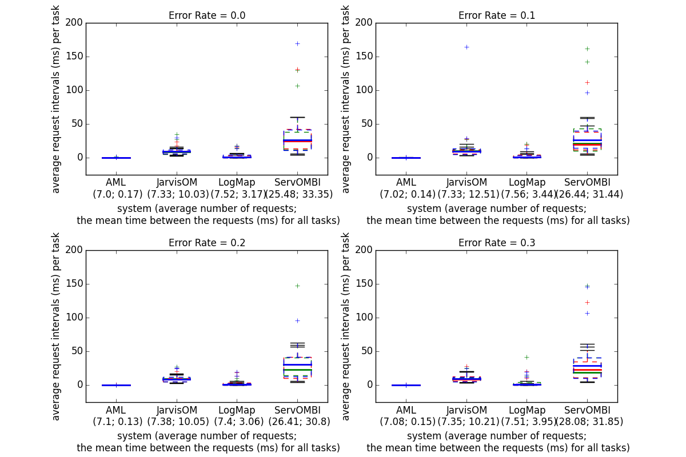

The following content is (mainly) based on the final version of the interactive section in the OAEI results paper.
If you notice any kind of error (wrong numbers, incorrect information on a matching system) do not hesitate to contact us.
The growth of the ontology alignment area in the past ten years has led to the development of many ontology alignment tools. After several years of experience in the OAEI, we observed that the results can only be slightly improved in terms of the alignment quality (precision/recall resp. F-Measure). Based on this insight, it is clear that fully automatic ontology matching approaches slowly reach an upper bound of the alignment quality they can achieve. A work by (Jimenez-Ruiz et al., 2012) has shown that simulating user interactions with 30% error rate during the alignment process has led to the same results as non-interactive matching. Thus, in addition to the validation of the automatically generated alignments by domain experts, we believe that there is further room for improving the quality of the generated alignments by incorporating user interaction. User involvement during the matching process has been identified as one of the challenges in front of the ontology alignment community by (Shvaiko et al., 2013) and user interaction with a system is an integral part of it.
At the same time with the tendency of increasing ontology sizes, the alignment problem also grows. It is not feasible for a user to, for instance validate all candidate mappings generated by a system, i.e., tool developers should aim at reducing unnecessary user interventions. All required efforts of the human have to be taken into account and it has to be in an appropriate proportion to the result. Thus, beside the quality of the alignment, other measures like the number of interactions are interesting and meaningful to decide which matching system is best suitable for a certain matching task. By now, all OAEI tracks focus on fully automatic matching and semi-automatic matching is not evaluated although such systems already exist, e.g., overview in (Ivanova et al., 2015). As long as the evaluation of such systems is not driven forward, it is hardly possible to systematically compare the quality of interactive matching approaches.
In this third edition of the interactive track we use three OAEI data sets, namely Conference, Anatomy and Large Bio data set. The conference dataset covers 16 ontologies describing the domain of conference organization. We only use the test cases for which an alignment is publicly available (altogether 21 alignments). The Anatomy data set includes two ontologies, the Adult Mouse Anatomy ontology and a part of the NCI Thesaurus (describing the human anatomy). Finally, LARGE BIO... The quality of the generated alignments in Conference, Anatomy and LargeBio tracks has been constantly increasing but in most cases only to small amount (by a few percent). For example, in the Conference track in 2013, the best system according to F-Measure (YAM++) achieves a value of 70% (Cuenca Grau et al., 2013). On the other hand, while the best results according to F-measure for the Anatomy track was achieved last year by AML with 94% there has been very little improvement over previous few campaigns (only few percent). This shows that there is room for improvement, which could be filled by interactive means.
The interactive matching track was evaluated at OAEI 2015 for the third time. The goal of this evaluation is to simulate interactive matching (Paulheim et al., 2013), where a human expert is involved to validate mappings found by the matching system. In the evaluation, we look at how interacting with the user improves the matching results. The SEALS client was modified to allow interactive matchers to ask an oracle. The interactive matcher can present a correspondence to the oracle, which then tells the system whether the correspondence is right or wrong. This year, in addition to emulating the perfect user, we also consider domain experts with variable error rates which reflects a more realistic scenario where a (simulated) user does not necessarily provide always a correct answer. We experiment with three different error rates, 0.1, 0.2 and 0.3. The errors were randomly introduced into the reference alignment with given rates. Each system was run three times and the final result of a system for each error rate represents the average of these runs. The interactive Conference and Anatomy track were run on a server with 3.46 GHz (6 cores) and 8GB RAM allocated to the matching systems. This is the same configuration which was used in the non-interactive version of the Anatomy track and runtimes in the interactive version of this track are therefore comparable. For the conference dataset with the ra1 alignment, we considered micro-average of precision and recall of different ontology pairs, while the number of interactions represent the total number of interactions in all sub-tasks. Finally, the three runs are averaged . More precisely, the results presented All matchers participating in the interactive track support both interactive and non-interactive matching. This allows us to analyze how much benefit the interaction brings for the individual matchers.
Overall, four systems participated in the interactive matching track: AML, JarvisOm, LogMap, and ServOMBI. The systems AML and LogMap have been further developed compared to last year, the other two participated in this track for the first time.
AML starts interacting with the user during the Selection and Repairing phases (for the LargeBio task only non-interactive repair is employed) at the end of the matching process. The user input is employed to filter the mappings included in the final alignment and AML does not generate new mappings or adjust matching parameters based on it. . AML avoids asking the same question more than once by keeping track of already asked questions and uses a query limit and other strategies to stop asking the user and reverts to non-interactive mode.
JarvisOM is based on an active learning strategy known as query-by-committee. In this strategy, informative instances are those where the committee members (classifiers; 3 in this campaign) disagree most. In order to initialize the classifiers committee sample entity pairs are selected using the heuristic of the Farthest First algorithm. JarvisOM asks the user at every iteration for pairs of entities that have the most value for the vote entropy measure (disagreement between committee members) and lower average euclidean distance. In the last iteration, the classifiers committee is used to generate the alignment between the ontologies.
ServOMBI asks the user for every mapping found at the end of the Terminological and Contextual phases and does not keep track of the questions it had already asked. Based on the user input it filters the mappings generated during these phases and does not employ the input to generate new mappings.
LogMap generates candidate mappings first and then employs different techniques (lexical, structural and reasoning-based) to discard some of them during the Assessment phase. During this phase in the interactive mode it interacts with the user and presents to him/her these mappings which are not clear-cut cases.
The four tables below present the results for the anatomy data set with four different error rates. The first six columns in each of the tables present the adjusted (the trivial correspondences in the oboInOwlnamespace have been removed as well as correspondences expressing relations different from equivalence) results obtained in this and the non-interactive Anatomy track. The measure recall+ indicates the amount of detected non-trivial correspondences (trivial correspondence are those with the same normalized label). The precision, recall and F-measure columns at the far right end of the table present the results as calculated by the SEALS client prior to the adjustment. The last three columns contain the evaluation results "according to the Oracle", meaning against the Oracle's alignment (i.e., the reference alignment as modified by the randomly introduced errors).
We first compare the performance of the four systems with an all-knowing oracle (0.0 error rate), in terms of precision, recall and F-measure, to the results obtained in the non-interactive Anatomy track (These are the first 6 columns in the corresponding tables, all numbers are adjusted ... .). The effect of introducing interactions with the oracle/user is mostly pronounced for the precision measure (except JarvisOM see below). In the interactive track (and 0.0 error rate) the precision for all four systems improves and, consequently, so does the F-measure, at the same time the recall improves for AML and JarvisOM and does not change for LogMap and ServOMBI. AML achieves the best F-measure and recall among the four with a perfect oracle. It should be noticed the huge improvement in the measures obtained by JarvisOM when user interactions are brought in - the F-measure improves almost 4,5 times together with the recall which improves 6 times and the precision goes up 2,5 times. The size of the alignment generated by the system also grows around 2,5 times. With introducing an erroneous oracle/user and moving towards higher error rates, obviously, the systems performance starts to slightly deteriorate in comparison to the all-knowing oracle. We can, however, observe that the changes in the error rates influence the four systems differently in comparison to the non-interactive results: While the AML performance with an all-knowing oracle is better on all measures with respect to the non-interactive results, the F-measure drops in the 0.2 and 0.3 cases, while the recall stays higher than the non-interactive results for all error rates. LogMap behaves similarly - the F-measure in the 0.2 and 0.3 cases drops below the non-interactive results, while the precision stays higher in all error rates. ServOMBI performance in terms of F-measure and Recall drops below the non-interactive results already in the 0.1 case, but the precision is higher in all cases. In contrast JarvisOM still performs better in the 0.3 case on all measures than in the non-interactive Anatomy track.
AML shows stable performance in connection to the size of the alignment and the number of (distinct) requests to the oracle generated with different error rates. As discussed it doesn't present the same question again to the user. The same observation regarding the unique requests applies to JarvisOM as well. It should be noted that JarvisOM uses very few requests to the oracle and this number is stable across the different error rates. Another notable difference is the hugely varying size of the alignment generated by JarvisOM which almost doubles in the 0.2 case comparing to the all-knowing oracle. The number of total and distinct requests grows with the error rate for LogMap together with a slight grow in the alignment size. As we noted above ServOMBI asks the user for every mapping found and the number of distinct requests for ServOMBI stays stable for the different rates. The total number of requests is almost double the distinct ones but at the same time the size of the alignment drops with introducing higher error rates. The run times between the different error rates slightly change for AML and does not change for LogMap and JarvisOM. The ServOMBI run time decreases with the increasing error rate. In comparison to the non-interactive track the LogMap and JarvisOM do not change, AML changes between 10% to 20%. ServOMBI run time is higher in the non-interactive track. (We are able to compare run times between the anantomy dataset runs in the different tracks since we run them on the same machine.)
For an interactive system the time intervals at which the user is involved in an interaction are important [more here]. Fig. 1 presents a comparison between the systems regarding the time periods at which the system asks the user. Across the three runs and different error rates the AML and LogMap requests intervals are around 1 millisecond. ServOMBI and JarvisOM are a different story. While the requests periods for ServOMBI are under 10 ms in most of the cases we see that there are some outliers requiring more than a second. Furthermore a manual inspection of the intervals showed that in several cases it takes more than 10 seconds between the questions to the user and in one extreme case --- 250 seconds. It can also be seen that the requests intervals increase at the last 50-100 questions. The average interval at which a question is presented to the user for JarvisOM is 1 second with about half of the requests to the user taking more than 1,5 seconds.
The take away of this analyses is the huge improvement for JarvisOM in all measures and error rates with respect to its non-interactive results. Also the different systems change different measures with the growth of the error rate.


We first focus on the performance of the systems with an all-knowing oracle. In this case, all systems improve their results compared to the non-interactive version of the Conference track. The biggest improvement in F-measure is achieved by ServOMBI 20%. Other systems also show substantial improvements, AML improves the F-measure by around 8%, JarvisOM by aroun 13% and LogMap by around 4%. Closer inspection shows that for different systems the improvement of F-measure can be attributed to different factors. For example, in the case of ServOMBI and LogMap interaction with the user improved precision while recall experienced only slight improvement. On the other hand, JarvisOM improved recall substantially while keeping similar level of precision. Finally, AML improved both precision and recall by more than 6 percent which attributed to a higher F-measure. As expected, the results start deteriorating when introducing the error in the oracle's answers. Interestingly, even with the error rate of 0.3 most systems perform similar with respect to the F-measure to the non-interactive version of the system. For example, AML's F-measure in the case with 0.3 error rate is only 0.5% worse than the non-interactive one. The most substantial difference is in the case of ServOMBI with an oracle with the error rate of 0.3 where the systems achieves around 5% worse result than in the non-interactive version. Again closer inspection shows that different systems are affected in different ways when errors are introduced. For example, if we compare the 0.0 and 0.3 case, we can see that for AML, precision is affected by 10% and recall by 6%. In the case of JarvisOM, precision drops by 20% while recall drops by only 3%. LogMap is affected in the similar manner and its precision drops by 10% while the recall drops by only 3%. Finally, the most substantial change is in the case of ServOMBI where the precision drops from 100% to around 66% and recall shows a drop of 22%.
When it comes to number of request to the oracle, we can see that 3 out of 4 systems do around 150 requests while ServOMBI does most requests, namely 550. AML and JarvisOM do not repeat their requests while around 40% of requests done by LogMap and ServOMBI are repeat requests.
This year we have two systems which competed in the last year's campaign, i.e., AML and LogMap. When comparing to the results of last year (perfect oracle), AML improved it's F-measure by around 2%. This increase can be accounted to increased precision (increase of around 3%). On the other hand, LogMap shows a slight decrease in recall and precision, and hence, in F-measure.
Bernardo Cuenca Grau , Zlatan Dragisic , Kai Eckert & et al. "Results of the Ontology Alignment Evaluation Initiative 2013" OM 2013. [pdf]
Heiko Paulheim, Sven Hertling, Dominique Ritze. "Towards Evaluating Interactive Ontology Matching Tools". ESWC 2013. [pdf]
Ernesto Jimenez-Ruiz, Bernardo Cuenca Grau, Yujiao Zhou, Ian Horrocks. "Large-scale Interactive Ontology Matching: Algorithms and Implementation". ECAI 2012. [pdf]
Valentina Ivanova, Patrick Lambrix, Johan Åberg. "Requirements for and evaluation of user support for large-scale ontology alignment". ESWC 2015. [publisher page]
Pavel Shvaiko, Jérôme Euzenat. "Ontology matching: state of the art and future challenges". Knowledge and Data Engineering 2013. [publisher page]
This track is currently organized by Zlatan Dragisic, Daniel Faria, Valentina Ivanova, Ernesto Jimenez Ruiz, Patrick Lambrix, and Catia Pesquita. If you have any problems working with the ontologies or any suggestions related to this track, feel free to write an email to ernesto [at] cs [.] ox [.] ac [.] uk or ernesto [.] jimenez [.] ruiz [at] gmail [.] com
We thank Dominique Ritze and Heiko Paulheim, the organisers of the 2013 and 2014 editions of this track, who were very helpful in the setting up of the 2015 edition.
The track is partially supported by the Optique project.